Cloud, as code
Azure landing zones, networking and workloads provisioned with reusable Terraform modules — no snowflakes, no surprises.
DevOps Engineer · Azure Cloud
A DevOps engineer with 5+ years of experience designing, automating and operating cloud platforms on Azure — with Terraform, Kubernetes, Helm and pipelines that ship calmly.
$ terraform plan -out=tfplan
Refreshing state...
Plan: 12 to add, 0 to change, 0 to destroy.
$ kubectl get pods -n prod
NAME READY STATUS
web-7d9f8c6b4-2xk9p 1/1 Running
api-5c2b7f9d1-m4n8q 1/1 Running
worker-6f4d2a8c7-t9w2z 1/1 Running
$ az pipelines run --name deploy-prod
✓ Pipeline #4821 succeeded · 3m 12s
01 — About

I'm Achinta, a DevOps engineer from India who genuinely enjoys the boring parts of software: predictable deploys, clean infrastructure, and alerts that never wake anyone at 2 a.m.
I started my career at TCS in 2021, moved from production support into cloud automation, and now build Azure platforms and delivery pipelines at PwC. Most of my day is Terraform, Kubernetes and pipelines — the rest is making sure Datadog agrees with me.
Azure landing zones, networking and workloads provisioned with reusable Terraform modules — no snowflakes, no surprises.
CI/CD in Azure DevOps and GitHub Actions with quality gates, OIDC auth and safe, repeatable releases.
Kubernetes workloads packaged with Helm, deployed with rolling, canary and blue-green strategies.
Datadog dashboards, monitors and SLOs so the team learns about issues from telemetry — not from users.
02 — Toolbox
Eight tools, one goal: move code to production quickly, safely and with full visibility.
Landing zones, networking, identity and managed services.
Modular, repeatable infrastructure across environments and teams.
Repos, Boards and multi-stage pipelines with approval gates.
Reusable workflows, matrix builds and OIDC-based deployments.
AKS operations, autoscaling, ingress, RBAC and zero-downtime rollouts.
Small, secure images with multi-stage builds and smart layer caching.
Chart authoring and templated releases with per-environment values.
Metrics, logs, APM and SLOs wired into a single source of truth.
03 — Experience
Five years across a global IT services leader and a Big Four consulting firm — from production support to platform engineering.
PwC
Building and running cloud platforms for client delivery teams, with automation and observability at the centre.
Tata Consultancy Services (TCS)
Started on production support and grew into cloud automation — owning pipelines, infrastructure and releases for enterprise applications.
Graduated in 2021 · India
04 — Contact
I'm open to DevOps, platform engineering and cloud roles — remote or hybrid. If you have a pipeline that needs love, I'd like to hear about it.
India · Open to remote